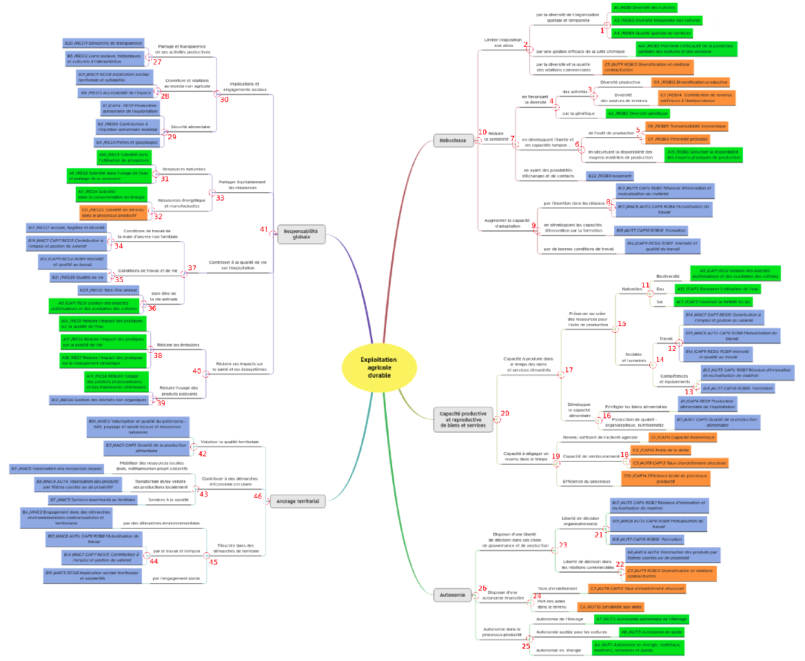

decision_rules.RmdThe aggregations from items to indicators, components, dimensions and properties are based on decision rules.
These decision rules are mainly expert-advice judgment combined with a thorough review of scientific literature.
In IDEATools, the decision rules are stored in an internal object named decision_rules_total. This list can be easily exported in the directory of your choice as an excel file using the internal function :
IDEATools:::show_decision_rules("my_directory")In the majority of cases, each indicator value can be obtained as the sum of all items related to this indicator. However, there are a few exceptions :
| Indicator | If… (Condition) | Then… (Result) |
|---|---|---|
| A1 | Item2 = 4 | A1 = 4 |
| Item2 != 4 | A1 = sum(items) | |
| A5 | MTD_15 >= 0.75 | A5 = 5 |
| MTD_15 < 0.75 | A5 = sum(items) | |
| A7 | MTD_14 = 0 | A7 = 0; |
| MTD_14 = 1, | A7 = Item2 | |
| MTD_14 = 2 | A7 = 0.7xItem1 + 0.3xItem2 | |
| A8 | MTD_15 >= 0.95 | A8 = 8 |
| MTD_15 < 0.95 | A8 = sum(items) | |
| A14 | MTD_16 = 0 | A14 = 4 |
| MTD_14 = 0 | A14 = Item1 | |
| MTD_16 != 0 AND MTD_14 != 0 | A7 = min(items) | |
| A19 | MTD_14 = 0 | A19 = Item1 |
| MTD_14 != 0 | A19 = min(items) | |
| B2 | MTD_14 = 0 | B2 = Item2 |
| MTD_14 != 0 | B2 = Item1 | |
| B23 | MTD_14 = 0 | B23 = Item2 |
| MTD_14 != 0 | B23 = round(mean(items)) |
For the properties approach, the decision rules are 46 data frames giving the evaluation for each node depending on the previous leaves and nodes, named with the pattern “node_xx”, based on this numeration of the heuristic tree (see Zahm et al., 2019) :
